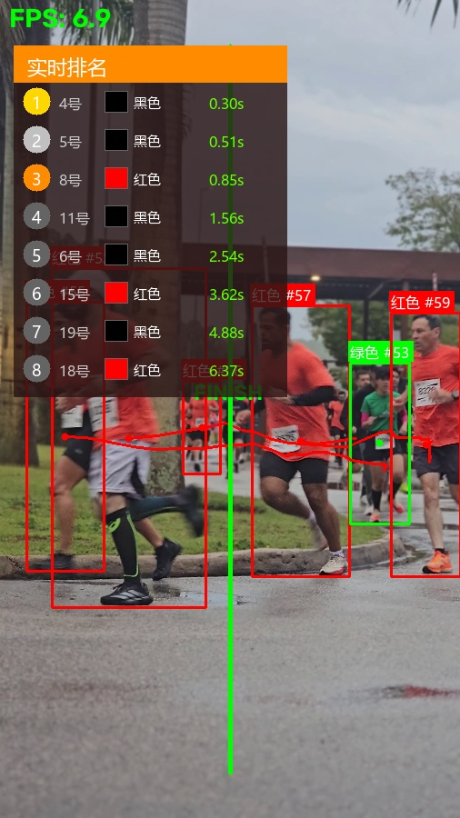

| 名次 | 选手编号 | 衣服颜色 | 追踪ID | 冲线时间 |
|---|---|---|---|---|
| 🥇 | 4 | 黑色 | #4 | 0.34s |
| 🥈 | 5 | 黑色 | #2 | 0.54s |
| 🥉 | 8 | 红色 | #8 | 0.88s |
| 4 | 11 | 黑色 | #11 | 1.59s |
| 5 | 6 | 黑色 | #6 | 2.57s |
| 6 | 15 | 红色 | #15 | 3.66s |
| 7 | 19 | 黑色 | #21 | 4.91s |
| 8 | 18 | 红色 | #20 | 6.40s |
| 9 | None | 灰色 | #24 | 7.05s |
| 10 | None | 黑色 | #32 | 7.62s |
| 11 | None | 黑色 | #29 | 8.33s |
| 12 | None | 灰色 | #36 | 8.91s |
| 13 | None | 红色 | #37 | 11.11s |
| 14 | None | 黑色 | #49 | 11.48s |
| 15 | None | 黑色 | #50 | 11.76s |
| 16 | None | 红色 | #55 | 12.20s |
| 17 | None | 红色 | #52 | 12.30s |
